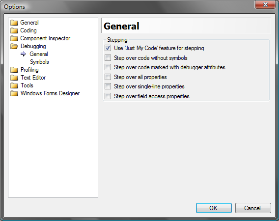
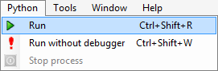
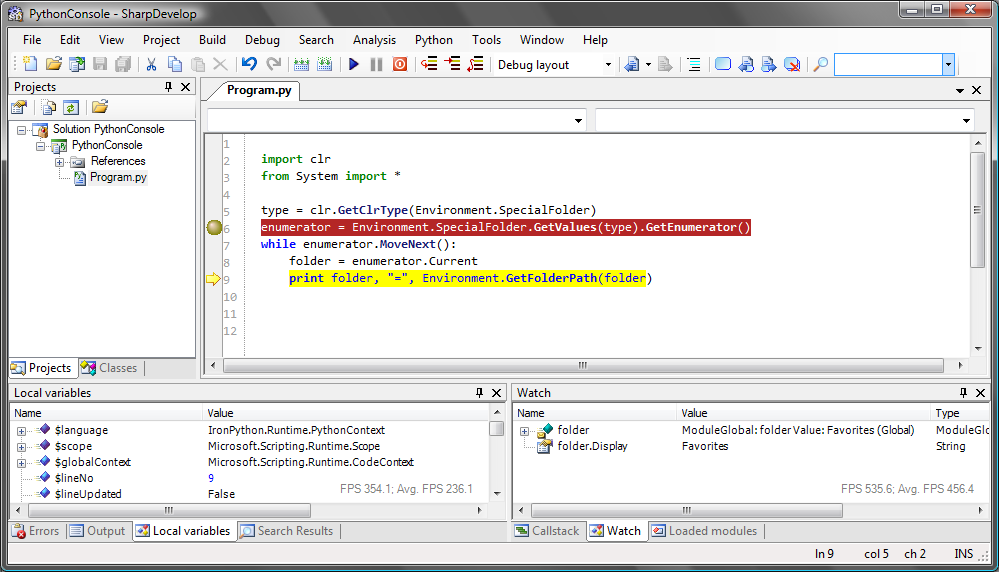
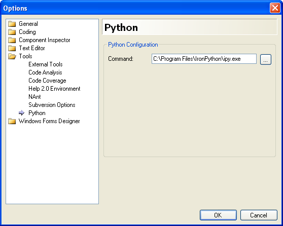

With SharpDevelop 3.1 you can now debug IronPython code with the IronPython Interpreter (ipy.exe).
Before you start make sure the debugger is set to use the Just My Code feature. From the Tools menu select Options and then click the Debugging category.

Ensure that the Just My Code feature is checked and that the Step over code without symbols is not checked. If the Step over code without symbols option is selected then stepping will not work properly and lines of code will be skipped over.
There are two ways to debug your code. You can use the Python menu or modify the project options. We will look at both of these alternatives. First open your IronPython project into SharpDevelop. Open your main file and make sure it is the active text editor window. Set a breakpoint somewhere in your code. Then from the Python menu select Run.

This will start ipy.exe which will run your code and the debugger should stop the execution at the breakpoint.

From this point you can do the usual debugging activities such as stepping through your code, viewing the callstack, adding items to the watch window, etc.
If you want to use a different ipy.exe then this can be specified in the Python Options dialog (Tools menu | Options).

To enable debugging when you press F5 or select the Debug Run menu option you can modify the project options. From the Projects menu select Project Options and then open the Debug tab. Here you should change the Start Action to Start external program and use the browse button to locate ipy.exe. In the Start Options add the following command line arguments, changing the name of your main file as required.
-D ${ProjectDir}\Program.py
Once these changes are saved you can then press F5 and ipy.exe will be run under the debugger instead of running the compiled executable.3
import clr
clr.AddReference("System.Windows.Forms")
Thanks to David Srbecky, SharpDevelop's debugger expert and maintainer, for reviewing the code changes I wanted to make to the debugger and making sure nothing was broken. Adding support for debugging IronPython was straightforward and required 10-15 lines of new code thanks to the code already written by David.
Thanks also to Harry Pierson (IronPython Program Manager at Microsoft) who has written a great set of blog posts on creating an IronPython debugger in IronPython which gave me the reason why SharpDevelop's debugger was not working when debugging IronPython code.